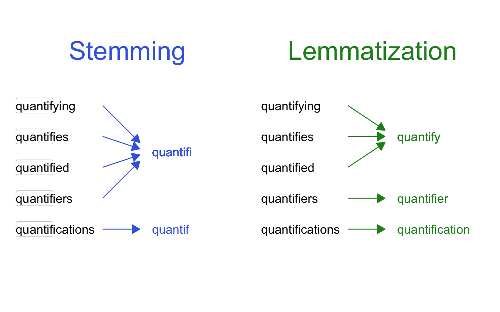

tokens <- tokens("20,000 is not so many words")
tokens
#> Tokens consisting of 1 document.
#> text1 :
#> [1] "20,000" "is" "not" "so" "many" "words"13 Tokenization
13.1 Tokens
The first step in the process of turning texts into numbers is almost always tokenization. Tokenization means splitting a long text into smaller pieces, called tokens. Once we have these smaller pieces, we will be able to count how many times each one appears in a text and turn these counts into numeric representations of our texts. There are six main types of tokens: words, stems, lemmas, n-grams, skipgrams, and shingles.
13.1.1 Words
Words are the obvious choice for tokens. The number of possible English sentences is infinite, but the number of possible English words is much smaller—only about 20,000 (Hellman, 2011). Words are especially useful for English, since English words usually do not change their form depending on their place in a sentence, and they are nearly always separated by a space. Separating an English text into words is therefore as simple as splitting it at every space character. This is essentially the default behavior of the Quanteda tokens() function, which takes a character vector or corpus and returns a “tokens” object:
We can likewise perform word-based tokenization for the entire corpus that we created in Chapter 12. To remove punctuation before doing so, we can add remove_punct = TRUE.
hippocorpus_tokens <- tokens(hippocorpus_corp,
remove_punct = TRUE)
print(hippocorpus_tokens, max_ndoc = 3, max_ntok = 6)
#> Tokens consisting of 6,854 documents and 6 docvars.
#> 32RIADZISTQWI5XIVG5BN0VMYFRS4U :
#> [1] "Concerts" "are" "my" "most" "favorite" "thing"
#> [ ... and 197 more ]
#>
#> 3018Q3ZVOJCZJFDMPSFXATCQ4DARA2 :
#> [1] "The" "day" "started" "perfectly" "with" "a"
#> [ ... and 177 more ]
#>
#> 3IRIK4HM3B6UQBC0HI8Q5TBJZLEC61 :
#> [1] "It" "seems" "just" "like" "yesterday" "but"
#> [ ... and 260 more ]
#>
#> [ reached max_ndoc ... 6,851 more documents ]13.1.2 Simplified Words: Stems and Lemmas
Are “quantify” and “quantified” the same word? What about “quantification”? Treating every new spelling as a separate word can add unnecessary complexity to analysis. It is often useful to have some way to cut away the grammatical aspects of words, leaving only their core, canonical form. Stemming and lemmatization are two ways to do this.
In stemming, we chop off prefixes and suffixes from either side of each word, leaving only the “stem”. For example, “quantify” and “quantified” would both be chopped down to “quantif.”
We can stem our Hippocorpus tokens with Quanteda’s tokens_wordstem() function. This function uses an updated version of the classic algorithm developed by Porter (1980). The algorithm was carefully designed to remove common suffixes (e.g. “-ic”, “-ate”, “-s”) without cutting off too much (e.g. “generic” and “generate” should register as different stems).
hippocorpus_stems <- hippocorpus_tokens |>
tokens_wordstem()
print(hippocorpus_stems, max_ndoc = 3, max_ntok = 6)
#> Tokens consisting of 6,854 documents and 6 docvars.
#> 32RIADZISTQWI5XIVG5BN0VMYFRS4U :
#> [1] "Concert" "are" "my" "most" "favorit" "thing"
#> [ ... and 197 more ]
#>
#> 3018Q3ZVOJCZJFDMPSFXATCQ4DARA2 :
#> [1] "The" "day" "start" "perfect" "with" "a"
#> [ ... and 177 more ]
#>
#> 3IRIK4HM3B6UQBC0HI8Q5TBJZLEC61 :
#> [1] "It" "seem" "just" "like" "yesterday" "but"
#> [ ... and 260 more ]
#>
#> [ reached max_ndoc ... 6,851 more documents ]Notice that “Concerts” has changed to “Concert”, “favorite” has changed to “favorit”, and “That’s” has changed to “That”.
Lemmatization takes a slightly different approach. Rather than chopping off prefixes and suffixes, lemmatization uses a lookup table to replace variants of words with the version that you might find in a dictionary. For example, “quantified” would become “quantify”. This canonical form is called a lemma.
We can lemmatize our Hippocorpus tokens using the lexicon package’s hash_lemmas lemmatization list and Quanteda’s tokens_replace() function.
hippocorpus_lemmas <- hippocorpus_tokens |>
tokens_replace(pattern = lexicon::hash_lemmas$token,
replacement = lexicon::hash_lemmas$lemma)
print(hippocorpus_lemmas, max_ndoc = 3, max_ntok = 6)
#> Tokens consisting of 6,854 documents and 6 docvars.
#> 32RIADZISTQWI5XIVG5BN0VMYFRS4U :
#> [1] "concert" "be" "my" "much" "favorite" "thing"
#> [ ... and 197 more ]
#>
#> 3018Q3ZVOJCZJFDMPSFXATCQ4DARA2 :
#> [1] "The" "day" "start" "perfectly" "with" "a"
#> [ ... and 177 more ]
#>
#> 3IRIK4HM3B6UQBC0HI8Q5TBJZLEC61 :
#> [1] "It" "seem" "just" "like" "yesterday" "but"
#> [ ... and 260 more ]
#>
#> [ reached max_ndoc ... 6,851 more documents ]Notice that “are” has changed to “be” and “started” has changed to “start”. Notice also that “That’s” has not changed at all. This is because it does not appear in the lookup table we are using.

The Porter algorithm’s choice to stem “quantifications” to “quantif” rather than “quantifi” is a strange one. No stemming or lemmatization algorithm is perfect. Language is complex, and simple rule-based systems are bound to leave things out or make mistakes. Even so, stemming and lemmatization can be good ways to simplify the job when working with words.
13.1.3 N-grams
Words, stems, and lemmas are great, but they do not stand alone. The sentence “20,000 is not so many words” contains the word “many.” So we can conclude that the sentence is referring to a lot of something, right? Not so fast! Word-based tokenization misses the more representative unit: “not so many.” Because order creates meaning in language, it is often worthwhile to break texts into groups of a few words at a time, called n-grams. Groups of two words are called two-grams (or bigrams), groups of three words like “not so many” are called three-grams (or trigrams), and so on.
To get all of the two-grams and three-grams from our example text, we feed the “tokens” object we created already into the tokens_ngrams() function, and specify that we want groups of twos and threes with n = c(2L, 3L).
ngrams <- tokens_ngrams(tokens, n = c(2L, 3L))
ngrams
#> Tokens consisting of 1 document.
#> text1 :
#> [1] "20,000_is" "is_not" "not_so" "so_many"
#> [5] "many_words" "20,000_is_not" "is_not_so" "not_so_many"
#> [9] "so_many_words"13.1.4 Skipgrams
Sometimes the most important combinations of words do not appear right next to each other. For example, it might be more useful to count occurrences of “not many” than it is to count occurrences of “not so many”. We can do this by using skipgrams—n-grams of non-adjacent words. In Quanteda, we can do this again with the tokens_ngrams(), now adding the argument skip = c(0L, 1L) to specify that we want both tokens of immediately adjacent words (0L), and tokens that skip one word in between (1L).
skipgrams <- tokens_ngrams(tokens, n = c(2L, 3L), skip = c(0L, 1L))
skipgrams
#> Tokens consisting of 1 document.
#> text1 :
#> [1] "20,000_is" "20,000_not" "is_not" "is_so"
#> [5] "not_so" "not_many" "so_many" "so_words"
#> [9] "many_words" "20,000_is_not" "20,000_is_so" "20,000_not_so"
#> [ ... and 9 more ]13.1.5 Shingles
Sometimes even individual words are too coarse. For example, the fact that our sentence contains “20,000” might be too specific to be informative, but it might be useful to know that the sentence contains “,000”, which more generally signifies big, round numbers. To get tokens like this, we need to start back at the beginning, this time separating our text into individual characters.
char_tokens <- tokens("20,000 is not so many words",
what = "character")
char_tokens
#> Tokens consisting of 1 document.
#> text1 :
#> [1] "2" "0" "," "0" "0" "0" "i" "s" "n" "o" "t" "s"
#> [ ... and 10 more ]Now we can create groupings of letters, called “shingles,” in the same way that we made n-grams, with the tokens_ngrams() function.
shingles <- tokens_ngrams(char_tokens, n = c(4L))
shingles
#> Tokens consisting of 1 document.
#> text1 :
#> [1] "2_0_,_0" "0_,_0_0" ",_0_0_0" "0_0_0_i" "0_0_i_s" "0_i_s_n" "i_s_n_o"
#> [8] "s_n_o_t" "n_o_t_s" "o_t_s_o" "t_s_o_m" "s_o_m_a"
#> [ ... and 7 more ]13.2 Custom Preprocessing
We have seen above that the tokens() function includes some basic preprocessing capabilities, for example remove_punct to remove punctuation. It also offers remove_numbers, remove_symbols (e.g. ▵, ⏱, ↤, $, ÷, ∬), and remove_url to remove URLs. Nevertheless, certain texts require more specific preprocessing steps. This can be achieved with the stringr package from the tidyverse, by modifying the raw text before turning it into a corpus object. For example, when working with texts from social media we might want to remove “RT” (a conventional indicator that the text was written by another person) with text = str_replace(text, "RT ", "") or user handles (used to refer to specific users) with text = str_replace(text, '@\\w+:|@\\w+', " "), since neither of these are tokens are relevant to the psychological quality of the text. In certain cases, we might be interested in counting user handles without regard for the specific user. In these cases, we might use text = str_replace(text, '@\\w+:|@\\w+', "USER_TAG ") so that all user tags get tokenized as “USER_TAG.”
13.3 Document-Feature Matrices (DFMs)
Once we have a suitable tokens object, we can count how many times each token appears in each text. This will provide a basis for comparing those texts later on. Thinking about a text this way—as a collection of tokens with different frequencies—is often referred to as the bag of words approach. When using the bag of words approach, we ignore the order of the words. We imagine that each topic has its characteristic bag of words, and speaking or writing is just a matter of pulling them out of the bag one at a time at random. This assumption is obviously wrong, but it makes it possible to analyze text with straightforward quantitative methods. Often, this is a worthwhile trade-off to make. As we advance to more and more complex methods in the coming chapters, we will find that many methods were designed to solve problems created by the overly simplistic bag of words approach.
For now though, let’s start with the basics. The way to represent the number of times each token appears in each document is with a document-feature matrix (DFM). This is a table where each row is a document (i.e. a text in our corpus) and each column is a feature (usually a token). The cells can then contain counts of how many times a particular feature appears in a particular document.
Creating DFMs in Quanteda is done with the dfm() function. By default, dfm() will also convert all text to lower case. In this default setting, “The” and “the” will register as two instances of the same token.
hippocorpus_dfm <- dfm(hippocorpus_tokens)
print(hippocorpus_dfm, max_ndoc = 6, max_nfeat = 6)
#> Document-feature matrix of: 6,854 documents, 27,668 features (99.50% sparse) and 6 docvars.
#> features
#> docs concerts are my most favorite thing
#> 32RIADZISTQWI5XIVG5BN0VMYFRS4U 1 1 5 1 2 1
#> 3018Q3ZVOJCZJFDMPSFXATCQ4DARA2 0 0 5 0 0 0
#> 3IRIK4HM3B6UQBC0HI8Q5TBJZLEC61 0 0 10 3 0 1
#> 3018Q3ZVOJCZJFDMPSFXATCQG04RAI 0 1 4 0 0 0
#> 3MTMREQS4W44RBU8OMP3XSK8NMJAWZ 0 0 5 0 0 0
#> 3018Q3ZVOJCZJFDMPSFXATCQG06AR3 0 0 4 0 0 0
#> [ reached max_ndoc ... 6,848 more documents, reached max_nfeat ... 27,662 more features ]Congratulations! You have turned texts into numbers! Now how do we use these numbers to measure psychological constructs?
Hellman, A. B. (2011). Vocabulary size and depth of word knowledge in adult-onset second language acquisition. International Journal of Applied Linguistics, 21(2), 162–182.
Porter, M. F. (1980). An algorithm for suffix stripping. Program, 14(3), 130–137.